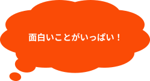
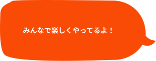
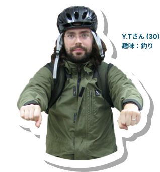
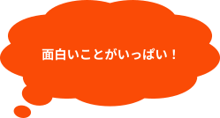
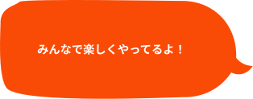
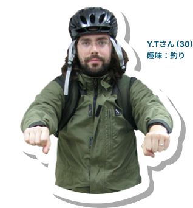

活動内容
Work
 





みんなの声を集める活動
私たちは、一部の人の意見だけではなく、「みんなの声」からまちの未来を
つくっていきたいと考えています。
多くの住民の方にアンケートをお願いし、集まったたくさんの思いは、ビジョンマップという形にまとめ、
何度も話し合いながら、よりよいまちづくりの土台にしています。
「住みやすくて、ちょっとワクワクするまちにしたい」
——そんな想いを実現するには、もっと多くの人の声が必要です。
高齢者だけでなく、若い人たちや子どもたち、商店街から少し離れた地域の人にも届くよう、
これからも声を集め、つなぎ、広げていきます。

アンケート
questionnaire
お祭りなどのイベントの際に、
参加された方へアンケートを実施しています。
街への思いや、地域の課題・希望を整理し、
今後の街づくりの参考にしています。
定期的な会議
meeting
定期的に会議をおこない、今後の活動内容やまちの住民の声を
どう実現していくかを話し合います。
「こんなアイデアはどう？」「これは実現できそう？」
と、メンバー同士が意見を出し合いながら、
まちの理想を少しずつ形にしています。

街の今を知る活動
ビジョンマップ作成とは、
街がこれから目指していく理想の姿を話し合いながら整理し、一枚の図や表にまとめることです。
地域の魅力や課題、
将来やりたいことを見える形にすることで、住んでいる人やお店、行政が共通の目標を持ちやすくなります。
このマップをもとに、イベントやまちづくりの計画を考えたり、
地域のつながりを深めるきっかけを作ったりすることができます。
ビジョンマップ
vision map
一部の人だけで決めるのではなく、地域のみなさんの声を
集めながら、少人数で何度も話し合いを重ねて作っています。
お祭りや清掃活動などで集めたアンケートをもとに、
まちの未来の姿を図にまとめていきます。
ブラダバシ
buradabashi「ブラダバシ」は、地域の歴史や見どころを学芸員さんと一緒に歩いてめぐるまち歩きイベントです。
ただ歩くだけでなく、まちの成り立ちや昔の様子を知ることで、 地域への理解や愛着が深まります。
街の礎を明確に
ビジョンマップ作成とは、
街がこれから目指していく理想の姿を話し合いながら整理し、一枚の図や表にまとめることです。
地域の魅力や課題、
将来やりたいことを見える形にすることで、住んでいる人やお店、行政が共通の目標を持ちやすくなります。
このマップをもとに,イベントやまちづくりの計画を考えたり、
地域のつながりを深めるきっかけを作ったりすることができます。
アンケート
questionnaireお祭りなどのイベントの際に,参加された方へアンケートを実施しています. 街への思いや,地域の課題・希望を整理し,今後の街づくりの参考にしています。
定期的な会議
meetingお祭りなどのイベントの際に,参加された方へアンケートを実施しています. 街への思いや,地域の課題・希望を整理し,今後の街づくりの参考にしています。
メンバー募集
Join us協議会は一緒に街を盛り上げてくれるメンバーを募集しています！
- 明治・内田橋堀川のことが好きな人
- 人と関わるのが好きな人
- 楽しいことが好きな人
- 未来のことを想像するのが好きな人
よくある質問
協議会に年齢制限はありますか？
協議会に年齢制限はありますか？
友達と参加しても良いですか？
友達と参加しても良いですか？
見学は可能ですか？
見学は可能ですか？
友達と参加しても良いですか？
友達と参加しても良いですか？